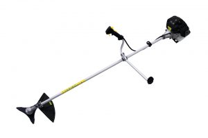
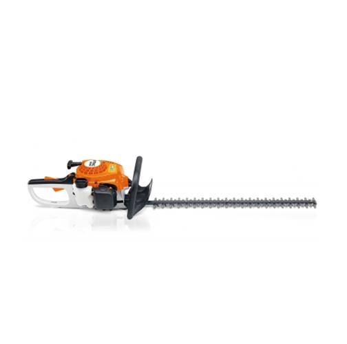
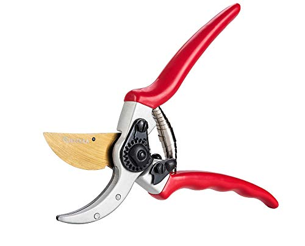
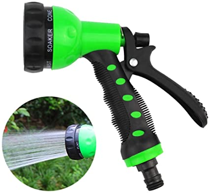
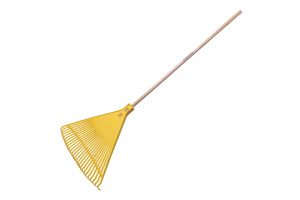
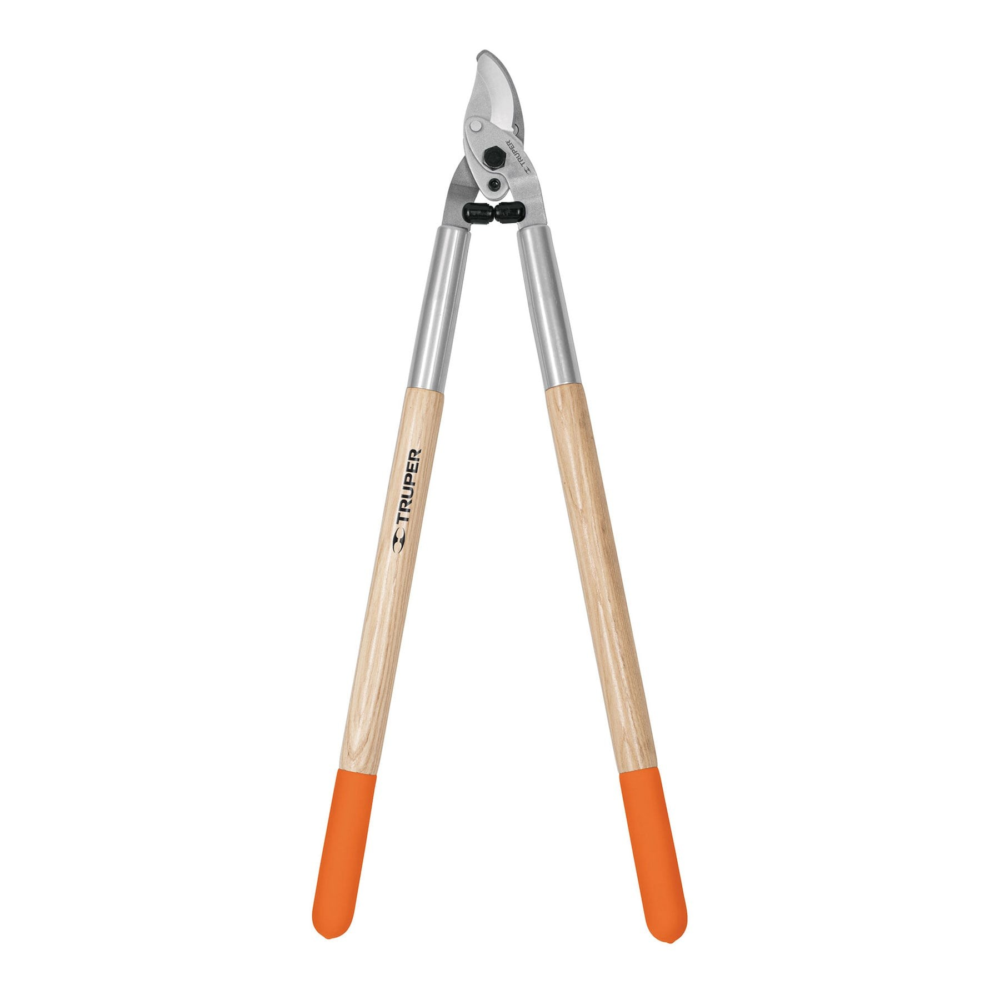
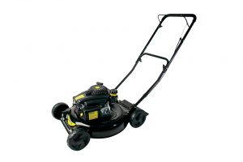
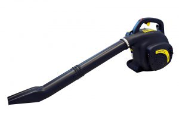
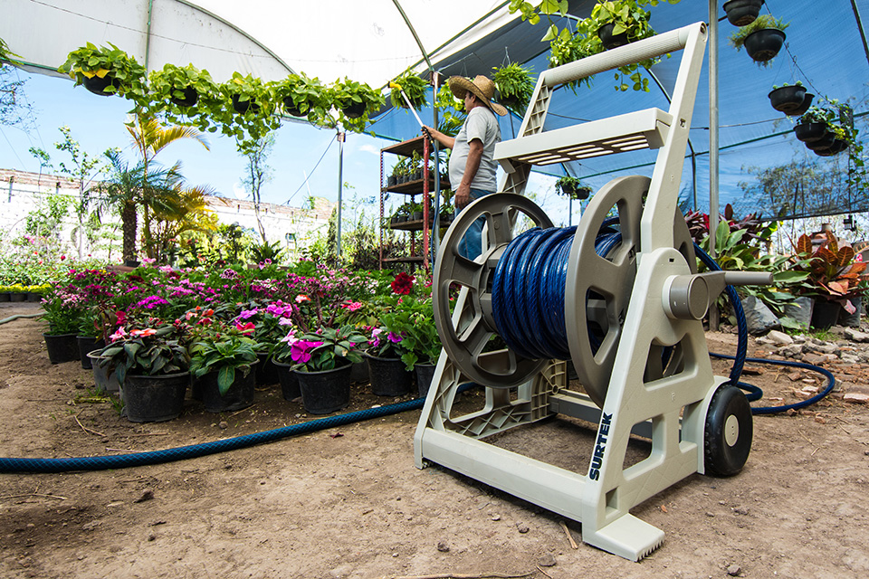

Herramientas
Encuentra todo tipo de herramientas para el cuidado de tu jardín: accesorios para limpieza y recolección de hojas, desmalezadores, palas y tijeras y tijerones para poda. Puedes potenciar el crecimiento de tu jardín con nuestros sistemas de riego.
Desbrozadora
Esta herramienta es ideal para cortar hierba o césped en lugares donde una podadora no puede acceder. La desbrozadora a gasolina Surtek DG752A tiene una potencia de 2.65 HP además de un arnés que hace más fácil llevarla a cualquier lugar.
$159.990
Cortasetos
Esta herramienta hace que podar árboles, setos y arbustos sea una tarea sencilla con poco esfuerzo. El cortasetos a gasolina Surtek H6024 tiene un motor de 2 tiempos con una potencia de 26 cc y sistema antivibración que garantizan un manejo muy práctico y cortes eficientes.
$69.990
Tijeras
Una de las herramientas clásicas e icónicas del oficio de la jardinería, realiza cortes limpios en la poda de árboles y arbustos. El modelo TSAG12 cuenta con topes amortiguadores que regulan el cierre y mangos ergonómicos que brindar un mejor agarre.
$15.990
Pistola
Accesorio básico de cualquier manguera que permite adaptar el chorro según la tarea que se deba realizar. Modelo 130340 cuenta con seguro de riego continuo y un diseño ergonómico y antiderrapante.
$4.990
Escoba
Su función es barrer materiales de poca consistencia como frutos caídos, hojas secas, hierba cortada etc. La escoba Surtek 132051 está hecha de Polipropileno de Alto Impacto, lo que la hace resistente y muy flexible.
$2.990
Tijeras para ramas altas
Tijeras que proporcionan alcance a ramas que superan los 2 metros de altura. El modelo TRA21 posee un tope amortiguador que absorbe los impactos.
$11.990
Podadora
Recorta el césped de los jardines con una altura uniforme de manera sencilla e invirtiendo poco esfuerzo. El modelo PP520, podadora a gasolina que garantiza un bajo consumo de combustible con un rendimiento de 4 hrs de uso.
$99.990
Sopla Hojas
Esta herramienta permite recoger grandes cantidades de hojas caídas en poco tiempo y con un esfuerzo mínimo. El modelo SAG532 su motor de dos tiempos funciona con gasolina y tiene una velocidad de 200 km/h.
$99.990
Porta Manguera
Lleva el agua a cualquier lugar con el uso de una manguera. Las dimensiones de ésta dependerán de los espacios donde se suela trabajar. El modelo M12S100 cuenta con un tejido especialmente diseñado para evitar deformaciones y aumentar la vida útil y resistencia de las mangueras.